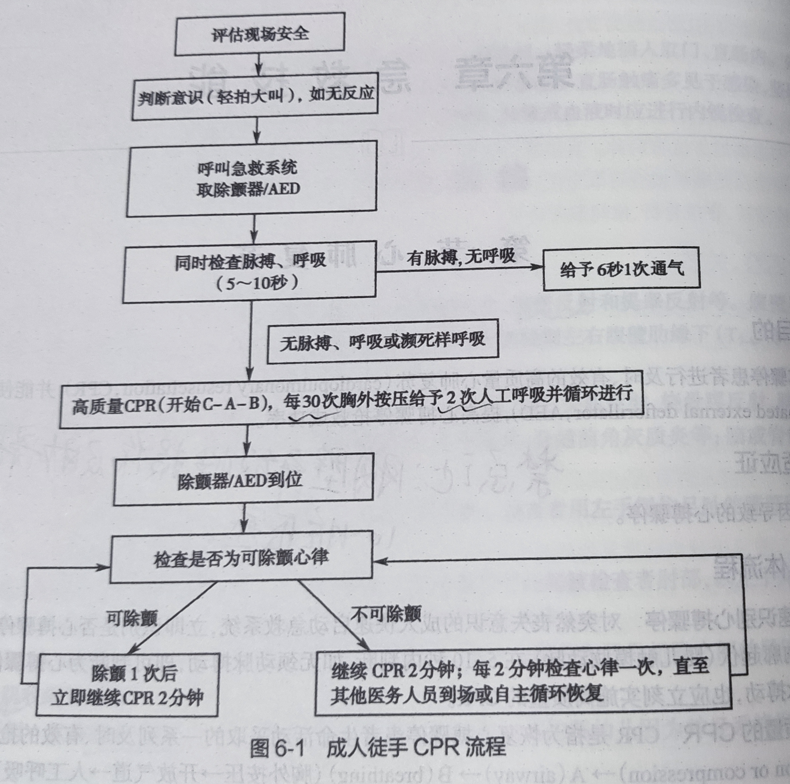

概述
前期 （准备阶段）
操作 （做检查）
结束 （报结果）
拿分点：心肺复苏+AED（按照提示音做就行）、吸氧术（鼻塞法）、三角巾包扎（头、胸背、手、足）、四肢骨折现场急救外固定
选择性拿分点：
一、心肺复苏
目的：通过人工胸外按压（C，circulation or compression）、开放气道（A,airway）、人工呼吸(B,breathing)这三个环节的支持，对患者的心、脑和其他重要脏器持续供血、供氧，从而为进一步抢救生命创造条件。
适应症：各种原因出现的心脏骤停；
若心脏骤停为溺水所致，应按A，B，C的顺序
相对禁忌症：胸壁开放性损伤、肋骨骨折，胸廓畸形或心包填塞
（一）胸外心脏按压+人工呼吸
操作前
1、评估周围环境：前方发现有人倒地，评估现场环境；
2、判断患者意识：拍打患者肩部（肩膀），并在双耳大声呼喊，评估意识情况（无意识）；
3、判断生命体征（时间不超过10秒）：
（1）呼吸：跪在患者右侧，脸贴者患者口鼻、眼斜视其胸廓，观察胸廓有无起伏（无自主呼吸）；
（2）大动脉搏动：触摸其颈静脉搏动（无颈静脉搏动）；
4、呼叫：呼喊他人帮助，指定人员拨打120，取附近的AED设备
操作
5、将患者仰卧于平地，去枕，迅速解开衣扣，松解腰带（可与步骤4同步进行）
6、人工胸外按压
（1）按压部位：左手掌根放在患者的胸骨中下1/3交界处（男性在两乳头连线中点），右手掌叠放于左手手背上，手指抬起不触及胸壁；
（2）按压深度：5-6cm，肘关节伸直，借助身体重力垂直向下按压
（3）按压频率：100-120次/分
按压01、02、03、04、05….30后结束按压，进行A、B操作，共需要进行5个循环
7、开放气道
（1）（用纱布）清除口、鼻腔内的分泌物及异物，保持呼吸道通畅；
（2）开放气道，仰头举颏法——左手置于患者额前，轻压患者头部使其后仰，右手示指和中指指尖置于患者下颌骨下方，提起下颌，开放气道，使下颌和耳垂连线与地面垂直；
8、人工 呼吸
（1）左手拇指和示指，捏紧患者的鼻孔，吸气后将口唇紧贴并完全包住患者口唇，深而快地向患者口内吹起；
（2）吹气持续1秒以上，吹气量500ml-600ml,直至患者胸廓向上抬起；
（3）立即脱离接触，使患者的口张开，并松开捏鼻的手指，观察胸部恢复状况，并有气体从患者口中排出，后再次吹气；
结束
9、每次胸外按压30次，进行2次人工呼吸，为1个循环（考试时需做5个循环，时间要在3分半以内，胸外按压时间需要小于10秒）
10、结束5个循环后，再次判断生命体征——观察颈动脉搏动，自主呼吸，瞳孔、皮肤颜色。
11、告知患者他刚才晕倒了，我对你进行了心肺复苏，周围群众帮忙打了120，现等救护人员的到来；
12、告知考官操作结束。该患者，生命体征恢复——可触及颈动脉搏动、自主呼吸恢复、面色转红润，瞳孔由散大缩小、对光反射恢复；

（二）AED（Automated External Defibrillator，自动体外除颤器）使用
AED通常配置于有大量人群聚集的地方（机场、高铁站、商场等），AED可自动判读心电活动，决定是否需要除颤（根据其语音提示进行就行）；
电极片（左边置于主动脉瓣区，右边置于二尖瓣区）
考场真题
临床情景：王某，70岁，晨练时突然倒地，呼之不应，口唇发绀。
要求：请立即为患者（医用模拟人）行单人徒手心肺复苏（完成5个循环）
时间：10分钟
二、 吸氧术（鼻塞法）
目的：通过提高动脉血氧分压和动脉血氧饱和度，增加动脉血氧含量，纠正各种原因所致的低氧状态，改善组织缺氧，维持机体生命活动。
步骤一
（1）考生准备：戴帽子、口罩、洗手消毒，防止交叉感染，位于患者右侧；
（2）患者准备：告知患者操作目的，取得配合，协助患者取舒适体位；
（3）物品准备：氧气枕（主要用于急救或短程转运）、一次性吸氧管（带鼻塞或双侧鼻导管）、面罩（普通面罩）、蒸馏水（生理盐水）、治疗碗、棉签、弯盘、手电筒、用氧记录单、笔
步骤二
（1）用手电筒检查患者鼻腔，用湿棉签清洁两侧鼻孔
（2）连接、并检查供氧装置（氧气流量的调节，湿化瓶装蒸馏水1/2）
低流量：1-2L/min，面罩法，调节氧流量6-8L/min
（3）检查气密性，置于治疗碗中，看有无气泡溢出
视病情调节好氧流量
（4）连接
单侧鼻塞：将鼻塞，塞入一侧鼻孔，用胶布固定鼻塞或固定鼻导管；
双侧鼻导管：插入鼻孔，从耳后（将鼻导管绕挂于双耳廓），并在颏下固定
（5）观察患者吸氧情况
步骤三
（1）记录开始给氧时间及氧流量，在吸氧时还需注意观察患者脉搏、血压、精神状态等情况有无改善；
（2）告知患者注意事项：不要随意调节氧流量，要做好“四防”——防火、防震、防油、防热
（3）报告考官给氧操作结束
三、三角巾包扎
一、头部
先将三角巾底边折叠放于前额，将底边两角拉至枕部先打一结，然后绕至前额打结、固定；
二、胸背部
如右胸受伤，将三角巾顶角放在右肩上，将底边两角由腋下拉至背部在右面打结，然后再将肩部的顶角拉下与其进行打结。
背部包扎与胸部包扎的方法一样，只有位置相反，结打在胸部；
三、手足
将指/趾尖朝向三角巾顶角放在三角巾上，顶角反折覆盖手/足背上，然后将底边缠绕打结固定；
四、四肢骨折现场急救外固定
目的：急救时的固定主要对骨折临时固定，防止骨折端活动刺伤血管、神经等周围组织造成继发性损伤，并减少疼痛，便于抢救运输和搬运。
注意事项：
（1）有创口者应先止血、包扎、再固定；（开放性伤口）
（2）固定前应先用布料、棉花、毛巾等软物，铺垫在肢体上，以免损伤皮肤；
（3）用绷带固定夹板时，绷带不要系在骨折处，应先捆扎骨折近心端，再捆扎骨折远心端；
（4）夹板应固定上、下各一个关节；
（5）大腿、小腿及脊柱骨折者，不宜随意搬动，应临时就地固定；
（6）固定应松紧适宜（上下可移动1cm）
操作前准备
1、患者准备：告知患者操作的目的，取得其配合，缓解其焦虑紧张情绪；
2、物品准备：根据题目准备，常为：三角巾、夹板、绷带、纱布、止血带、笔、记录牌；
一、上臂骨折固定
将夹板在骨折上臂的四侧（至少内外两侧），用绷带捆绑固定，然后用三角巾（将其折叠成燕尾式）悬吊前臂于胸前；
若无夹板固定，可用三角巾（折叠成带状）先将伤肢固定于胸廓，然后再用另一条三角巾（将其折叠成燕尾式）将伤肢悬吊于胸前。
二、前臂骨折固定
将夹板置于前臂四侧（至少掌侧及背侧），用绑带（绷带）捆绑固定，然后用三角巾（将其折叠成燕尾式）悬吊前臂于胸前；
若无夹板固定，可用三角巾（将其折叠成燕尾式）悬吊前臂于胸前，然后再用三角巾（折叠成带状）先将伤肢固定于胸廓。

小结
1、评估环境，检查患者生命体征，了解受伤肢体有无骨折，伤口的血运和感觉等情况；
2、检查患肢：暴露损伤的肢体，了解伤口及患侧肢体远端的血运和功能状况；
3、处理伤口：充分暴露伤口，除去伤口周围污物及异物；
4、包扎伤口：伤口处覆盖无菌纱布或棉垫，并适度加压包扎；
5、垫棉垫：固定前用棉垫等软物铺垫在夹板与前臂间；
6、夹板固定
（1）前臂：用4块夹板固定，将夹板置于前臂四侧，固定腕、肘关节；
（2）上臂：将夹板放在骨折上臂4侧，绷带捆扎固定；
7、绷带捆扎：先固定远折端，再固定近折端，以减少患肢充血水肿。松紧度以绷带上下可移动1cm为宜。
8、三角巾固定：
（1）前臂：将三角巾折叠成燕尾式，将前臂悬吊于胸前（90°），在颈后打结；
（2）上臂：将三角巾折叠成燕尾式，将前臂悬吊于胸前（90°），在颈后打结；
9、告诉患者相关注意事项以及操作结束，并向考官告知操作结束。
三、股骨骨折固定
（1）健肢固定法：在单条腿股骨骨折时，可采用健肢固定法。
用绷带或三角巾，将双下肢绑在一起，在膝关节、踝关节及两腿之间的空隙处加棉垫，足踝部应“8”字固定（确保成90°），使足部与小腿成直角；
（2）躯干固定法：用长夹板从脚跟至腋下，短夹板从脚跟至大腿根部，分别置于患腿的外、内侧，用绷带或三角巾固定，足踝部应“8”字固定（确保成90°），使足部与小腿成直角。
四、小腿骨折固定
用长度由脚跟至大腿中部的两块夹板，分别置于小腿内、外侧，再用三角巾或绷带固定，也可用三角巾或绷带将患肢固定于健肢。

下肢骨折固定小结
1、评估环境，检查患者生命体征，了解受伤肢体有无骨折，伤口的血运和感觉等情况；
2、检查患肢：暴露损伤的肢体，了解伤口及患侧肢体远端的血运和功能状况；
3、处理伤口：充分暴露伤口，除去伤口周围污物及异物；
4、包扎伤口：伤口处覆盖无菌纱布或棉垫，并适度加压包扎；
5、垫棉垫：固定前用棉垫等软物铺垫在夹板与肢体间；
6、固定
小腿骨折——选用2块夹板，长度由脚跟至大腿中部，分别置于患肢内、外侧，用三角巾或绷带捆绑固定上、下各一个关节，顺序为先固定远折端，再固定近折端。也可用三角巾将患肢固定于健康（膝、踝关节处垫棉垫）。松紧度以绷带上下可移动1cm为宜。
7、告诉患者相关注意事项以及操作结束，并向考官告知操作结束。
转载请注明来源，欢迎对文章中的引用来源进行考证，欢迎指出任何有错误或不够清晰的表达。也可以邮件至 771192805@qq.com